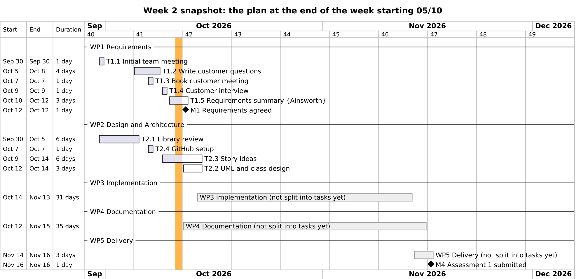
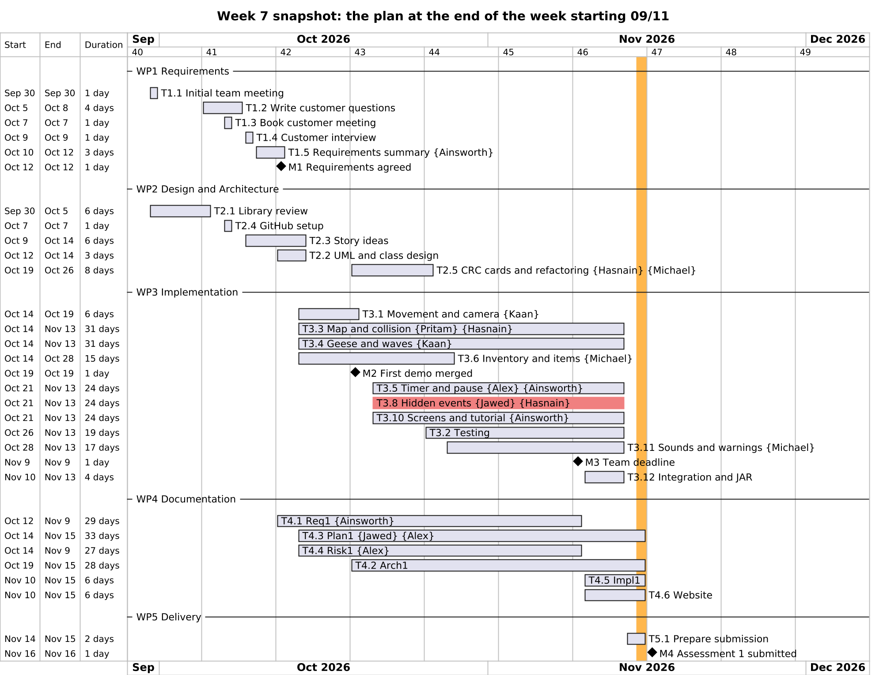
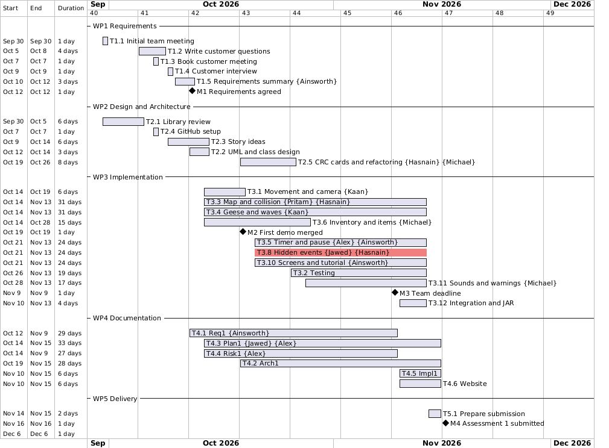

These are weekly snapshots of our project plan. The orange line marks the end of each week, and the filled part of each bar shows how far through its planned time each task was. Grey bars are work that had not been split into tasks yet. Click a chart to open it at full size.
The first plan was high-level, made of the five work packages from our WBS draft. At the initial meeting we chose libGDX because it was modern and suited a top-down game.

Feedback from a professor changed our customer questions to focus on what the customer wanted. We set up GitHub early (07/10), and at the customer meeting on 09/10 we learned we were responsible for the game's story, so T2.3 Story ideas was added.

The customer's answers were summarised on 12/10. On 14/10 the work was split by person into documentation (planning, risk, requirements) and core classes (map, items, student, geese, events), aiming for a demo by 19/10.

The branches were merged into main on 19/10, on schedule. CRC cards, refactoring and loading screens were added, and from 21/10 the architecture became a whole-team task. The architecture and planning documents were due by 02/11.

Jawed missed the 26/10 and 28/10 meetings, so the events task moved to Hasnain on 28/10 (shown in red). The prototype was tested on 29/10, and the timer, pause, waves and sounds were assigned next.

No team meeting was held, and we merged the code again in an online meeting. The architecture and planning documents slipped past 02/11 (shown in orange).

At our internal deadline on 09/11 the planning document was furthest behind, so Alex joined Jawed on it. We re-planned around a priority list and added integration, the implementation document, the website and the submission.

The final Gantt chart at the end of the project.
